Random-level through millions of keys
Real Python measurements from 1,024 to 2,097,152 keys. One deterministic trial per size and input family (no standard error) measures the random-level heuristic. Finite measurements do not establish logarithmic balance. All charts are downloadable SVGs.
Trial outcomes: 84 complete · 0 timed out · 0 not run after a group stopped · 0 errors. All records are included in the downloads.
Every graph has a muted dashed log₂(n) curve behind the measurements. It is an unscaled numeric reference, not a fitted bound or timing prediction; metric units remain as labelled.
Largest trial peak resident memory: 569.8 MiB, including final invariant validation. Per-process address-space cap: 1,024 MiB. Download memory record.
Logarithmic x scale; y uses log(1 + value), so zeros remain visible. Whiskers show ±1 standard error. Missing points indicate incomplete groups; open the measurement tables for statuses.
Random sequences
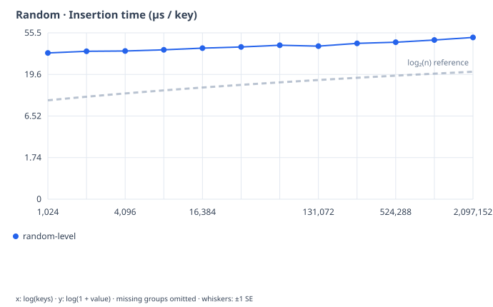
Download SVG
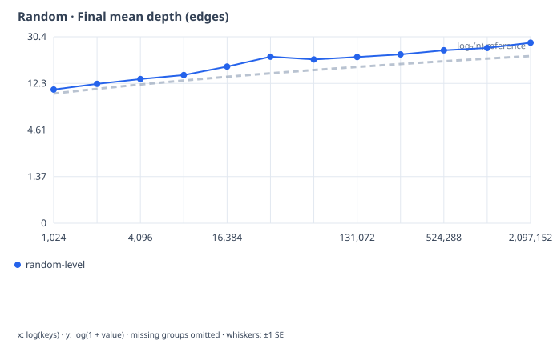
Download SVG
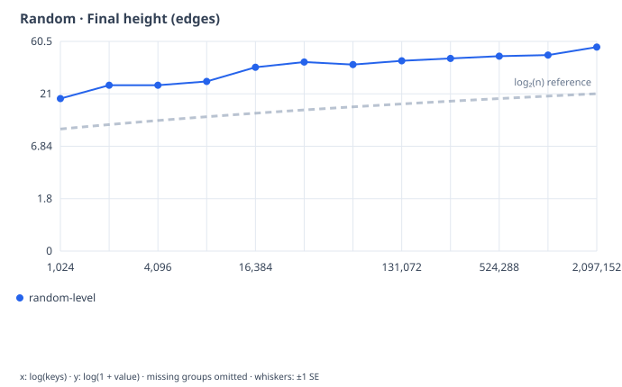
Download SVG
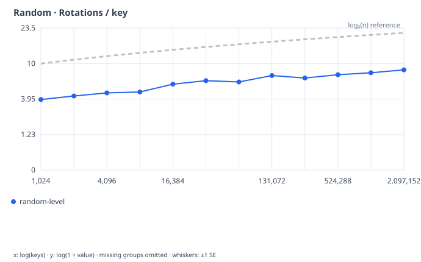
Download SVG
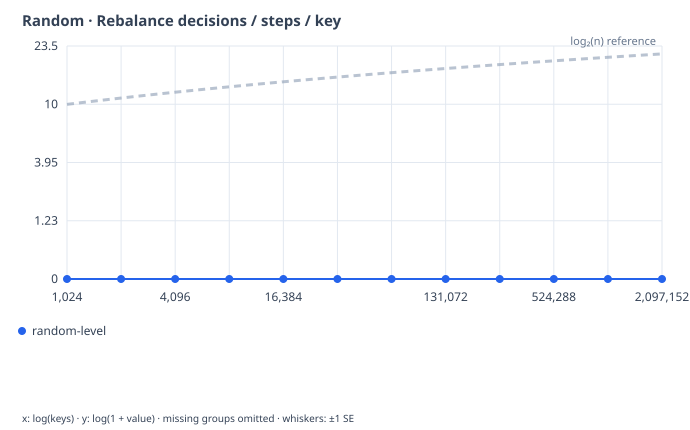
Download SVG
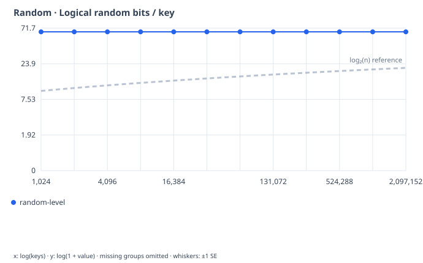
Download SVG
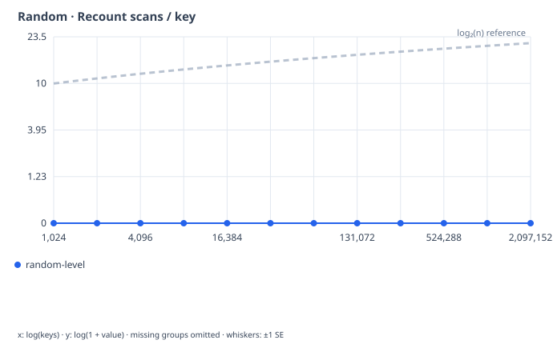
Download SVG
Measurements for random
| Strategy | Input | Keys | Status | Trials | µs/key | Seconds | Mean depth | Depth SE | Height | Insertion depth | Rot/key | Max rot | Decisions/key | Max decisions | Bits/key | Max bits | Scans/key | Max scans |
|---|---|---|---|---|---|---|---|---|---|---|---|---|---|---|---|---|---|---|
| random-level | random | 1.02e+03 | complete | 1/1 | 33.7 | 0.0345 | 10.8 | — | 19 | 10.8 | 3.9 | 13 | 0 | 0 | 64 | 64 | 0 | 0 |
| random-level | random | 2.05e+03 | complete | 1/1 | 35.1 | 0.0719 | 12.2 | — | 25 | 12.2 | 4.3 | 19 | 0 | 0 | 64 | 64 | 0 | 0 |
| random-level | random | 4.1e+03 | complete | 1/1 | 35.4 | 0.145 | 13.4 | — | 25 | 13.6 | 4.68 | 21 | 0 | 0 | 64 | 64 | 0 | 0 |
| random-level | random | 8.19e+03 | complete | 1/1 | 36.4 | 0.299 | 14.5 | — | 27 | 14.7 | 4.8 | 23 | 0 | 0 | 64 | 64 | 0 | 0 |
| random-level | random | 1.64e+04 | complete | 1/1 | 38 | 0.623 | 17.1 | — | 36 | 16.8 | 5.92 | 23 | 0 | 0 | 64 | 64 | 0 | 0 |
| random-level | random | 3.28e+04 | complete | 1/1 | 39.1 | 1.28 | 20.7 | — | 40 | 18.4 | 6.48 | 29 | 0 | 0 | 64 | 64 | 0 | 0 |
| random-level | random | 6.55e+04 | complete | 1/1 | 40.8 | 2.68 | 19.7 | — | 38 | 19.2 | 6.27 | 28 | 0 | 0 | 64 | 64 | 0 | 0 |
| random-level | random | 1.31e+05 | complete | 1/1 | 39.9 | 5.23 | 20.6 | — | 41 | 21.3 | 7.4 | 33 | 0 | 0 | 64 | 64 | 0 | 0 |
| random-level | random | 2.62e+05 | complete | 1/1 | 42.8 | 11.2 | 21.7 | — | 43 | 21.9 | 6.95 | 33 | 0 | 0 | 64 | 64 | 0 | 0 |
| random-level | random | 5.24e+05 | complete | 1/1 | 44 | 23.1 | 23.5 | — | 45 | 23.5 | 7.56 | 38 | 0 | 0 | 64 | 64 | 0 | 0 |
| random-level | random | 1.05e+06 | complete | 1/1 | 46.5 | 48.7 | 24.6 | — | 46 | 24.9 | 7.95 | 35 | 0 | 0 | 64 | 64 | 0 | 0 |
| random-level | random | 2.1e+06 | complete | 1/1 | 49.5 | 104 | 27.2 | — | 54 | 26.5 | 8.55 | 40 | 0 | 0 | 64 | 64 | 0 | 0 |
Increasing sequences
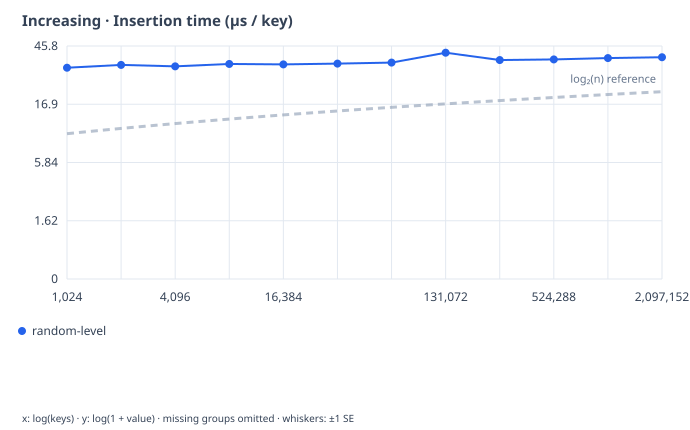
Download SVG
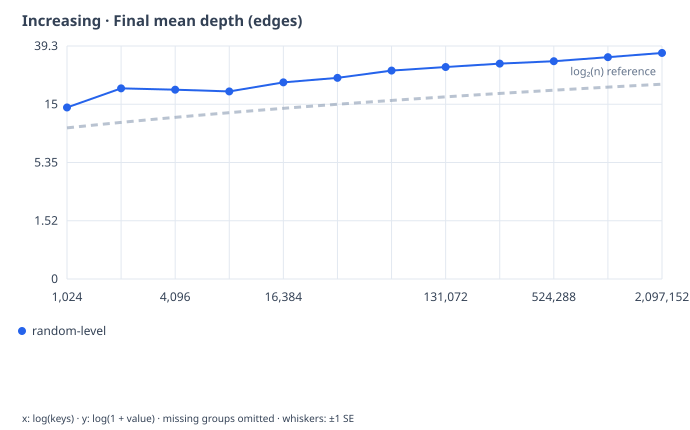
Download SVG
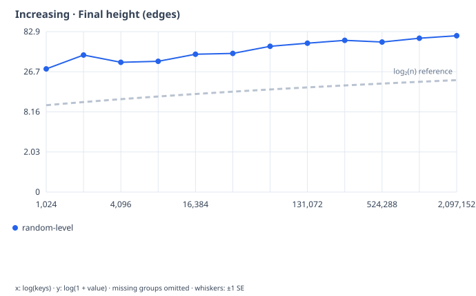
Download SVG
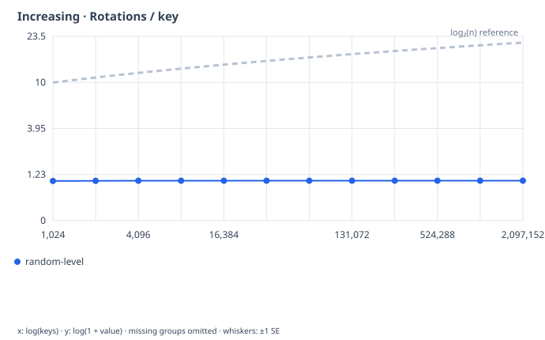
Download SVG

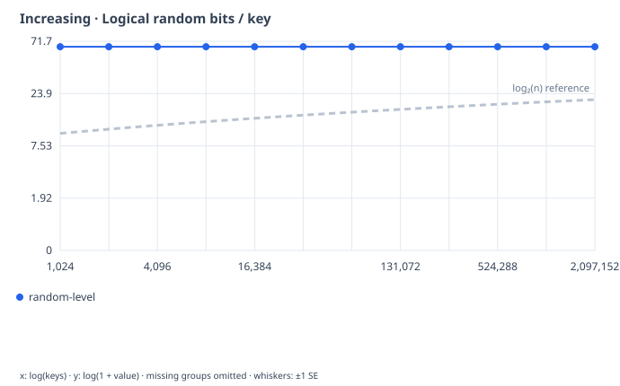
Download SVG
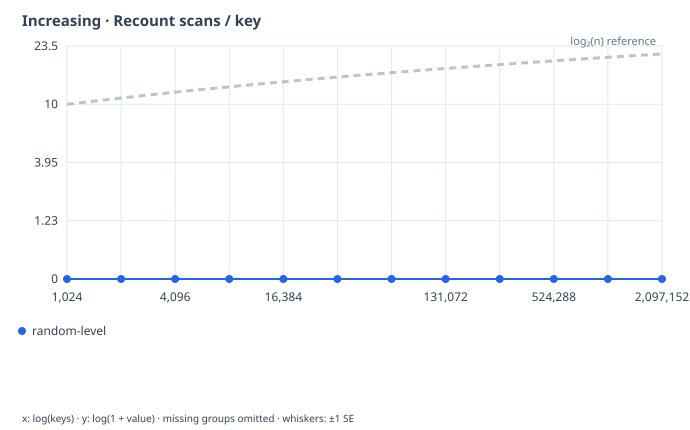
Download SVG
Measurements for increasing
| Strategy | Input | Keys | Status | Trials | µs/key | Seconds | Mean depth | Depth SE | Height | Insertion depth | Rot/key | Max rot | Decisions/key | Max decisions | Bits/key | Max bits | Scans/key | Max scans |
|---|---|---|---|---|---|---|---|---|---|---|---|---|---|---|---|---|---|---|
| random-level | increasing | 1.02e+03 | complete | 1/1 | 31.7 | 0.0324 | 14.2 | — | 29 | 7.42 | 0.991 | 9 | 0 | 0 | 64 | 64 | 0 | 0 |
| random-level | increasing | 2.05e+03 | complete | 1/1 | 33.2 | 0.068 | 19.6 | — | 43 | 8.36 | 0.995 | 10 | 0 | 0 | 64 | 64 | 0 | 0 |
| random-level | increasing | 4.1e+03 | complete | 1/1 | 32.4 | 0.133 | 19.2 | — | 35 | 9.4 | 0.999 | 12 | 0 | 0 | 64 | 64 | 0 | 0 |
| random-level | increasing | 8.19e+03 | complete | 1/1 | 33.8 | 0.277 | 18.6 | — | 36 | 10.4 | 0.999 | 13 | 0 | 0 | 64 | 64 | 0 | 0 |
| random-level | increasing | 1.64e+04 | complete | 1/1 | 33.5 | 0.549 | 21.7 | — | 44 | 11.4 | 0.999 | 13 | 0 | 0 | 64 | 64 | 0 | 0 |
| random-level | increasing | 3.28e+04 | complete | 1/1 | 34 | 1.11 | 23.3 | — | 45 | 12.4 | 1 | 15 | 0 | 0 | 64 | 64 | 0 | 0 |
| random-level | increasing | 6.55e+04 | complete | 1/1 | 34.6 | 2.27 | 26.3 | — | 55 | 13.4 | 1 | 16 | 0 | 0 | 64 | 64 | 0 | 0 |
| random-level | increasing | 1.31e+05 | complete | 1/1 | 40.9 | 5.36 | 27.9 | — | 60 | 14.4 | 1 | 17 | 0 | 0 | 64 | 64 | 0 | 0 |
| random-level | increasing | 2.62e+05 | complete | 1/1 | 36.1 | 9.46 | 29.5 | — | 65 | 15.4 | 1 | 17 | 0 | 0 | 64 | 64 | 0 | 0 |
| random-level | increasing | 5.24e+05 | complete | 1/1 | 36.5 | 19.1 | 30.7 | — | 62 | 16.4 | 1 | 18 | 0 | 0 | 64 | 64 | 0 | 0 |
| random-level | increasing | 1.05e+06 | complete | 1/1 | 37.3 | 39.1 | 32.8 | — | 69 | 17.4 | 1 | 19 | 0 | 0 | 64 | 64 | 0 | 0 |
| random-level | increasing | 2.1e+06 | complete | 1/1 | 37.9 | 79.4 | 35.1 | — | 74 | 18.4 | 1 | 21 | 0 | 0 | 64 | 64 | 0 | 0 |
Decreasing sequences
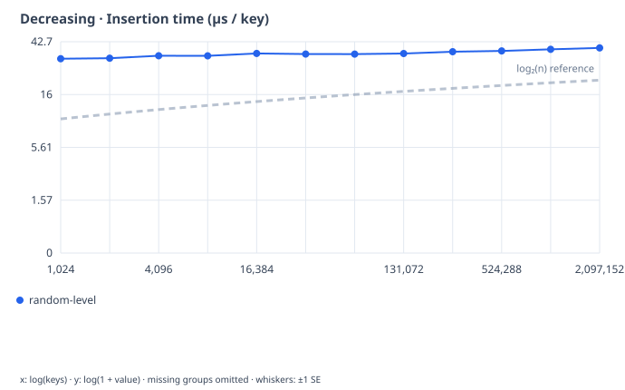
Download SVG
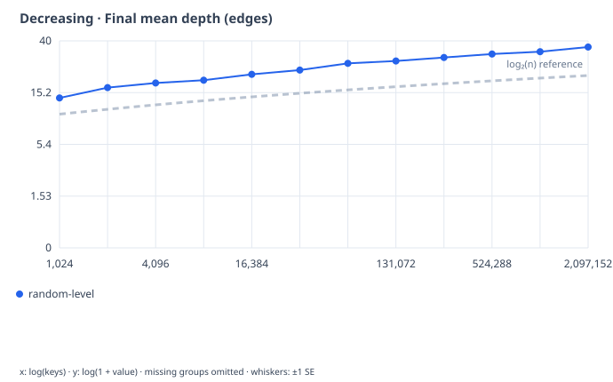
Download SVG
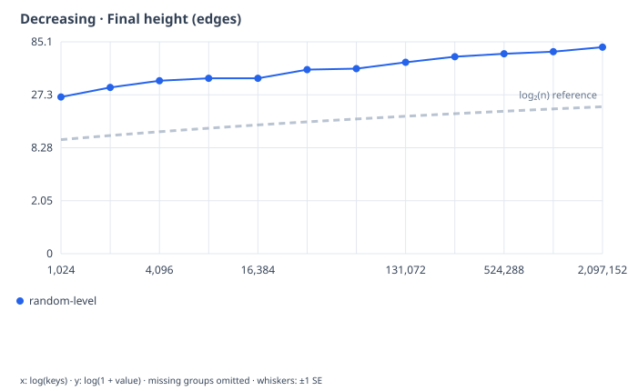
Download SVG
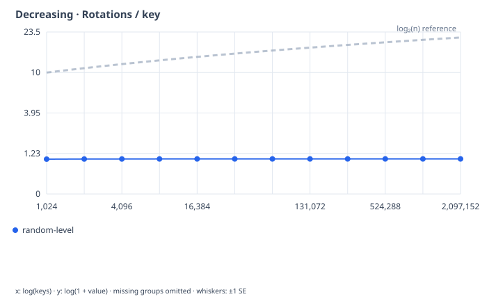
Download SVG
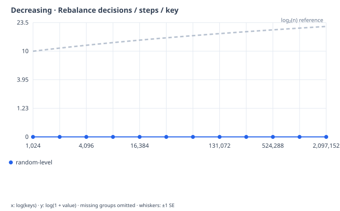
Download SVG
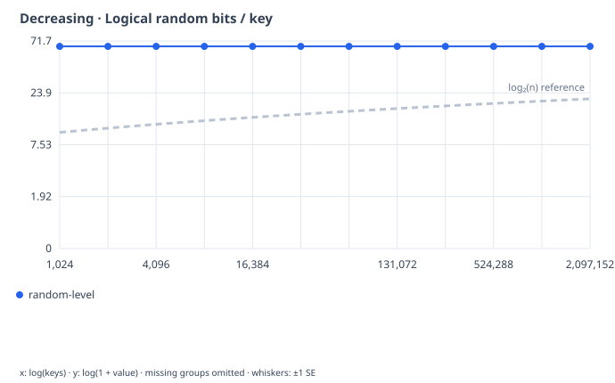
Download SVG

Measurements for decreasing
| Strategy | Input | Keys | Status | Trials | µs/key | Seconds | Mean depth | Depth SE | Height | Insertion depth | Rot/key | Max rot | Decisions/key | Max decisions | Bits/key | Max bits | Scans/key | Max scans |
|---|---|---|---|---|---|---|---|---|---|---|---|---|---|---|---|---|---|---|
| random-level | decreasing | 1.02e+03 | complete | 1/1 | 31.3 | 0.032 | 13.7 | — | 26 | 7.43 | 0.99 | 9 | 0 | 0 | 64 | 64 | 0 | 0 |
| random-level | decreasing | 2.05e+03 | complete | 1/1 | 31.6 | 0.0647 | 16.7 | — | 32 | 8.5 | 0.996 | 9 | 0 | 0 | 64 | 64 | 0 | 0 |
| random-level | decreasing | 4.1e+03 | complete | 1/1 | 33 | 0.135 | 18.2 | — | 37 | 9.34 | 0.997 | 12 | 0 | 0 | 64 | 64 | 0 | 0 |
| random-level | decreasing | 8.19e+03 | complete | 1/1 | 33 | 0.27 | 19.2 | — | 39 | 10.4 | 0.999 | 12 | 0 | 0 | 64 | 64 | 0 | 0 |
| random-level | decreasing | 1.64e+04 | complete | 1/1 | 34.5 | 0.565 | 21.5 | — | 39 | 11.4 | 0.999 | 14 | 0 | 0 | 64 | 64 | 0 | 0 |
| random-level | decreasing | 3.28e+04 | complete | 1/1 | 34.1 | 1.12 | 23.3 | — | 47 | 12.4 | 1 | 15 | 0 | 0 | 64 | 64 | 0 | 0 |
| random-level | decreasing | 6.55e+04 | complete | 1/1 | 34.1 | 2.23 | 26.4 | — | 48 | 13.4 | 1 | 16 | 0 | 0 | 64 | 64 | 0 | 0 |
| random-level | decreasing | 1.31e+05 | complete | 1/1 | 34.4 | 4.51 | 27.6 | — | 55 | 14.4 | 1 | 17 | 0 | 0 | 64 | 64 | 0 | 0 |
| random-level | decreasing | 2.62e+05 | complete | 1/1 | 35.6 | 9.33 | 29.4 | — | 62 | 15.4 | 1 | 17 | 0 | 0 | 64 | 64 | 0 | 0 |
| random-level | decreasing | 5.24e+05 | complete | 1/1 | 36.1 | 18.9 | 31.4 | — | 66 | 16.4 | 1 | 18 | 0 | 0 | 64 | 64 | 0 | 0 |
| random-level | decreasing | 1.05e+06 | complete | 1/1 | 37.2 | 39 | 32.7 | — | 69 | 17.4 | 1 | 18 | 0 | 0 | 64 | 64 | 0 | 0 |
| random-level | decreasing | 2.1e+06 | complete | 1/1 | 38.2 | 80 | 35.7 | — | 76 | 18.4 | 1 | 20 | 0 | 0 | 64 | 64 | 0 | 0 |
Converging sequences
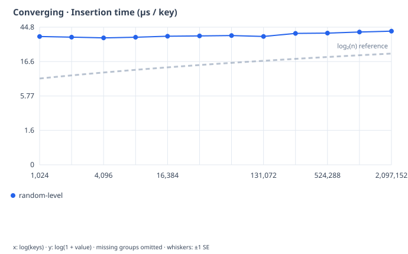
Download SVG
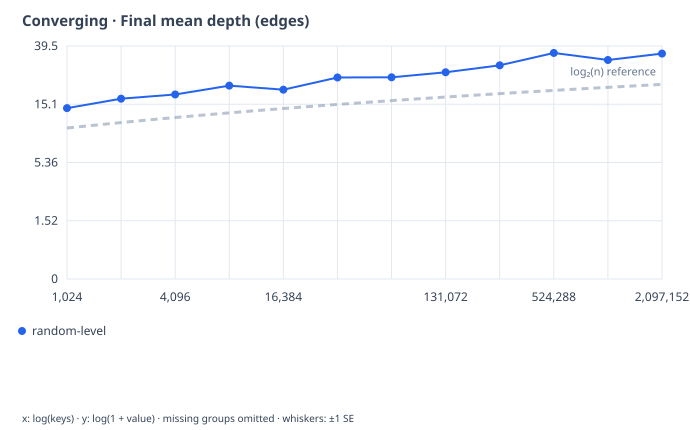
Download SVG
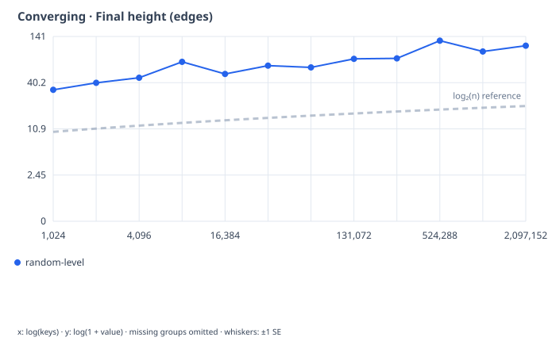
Download SVG
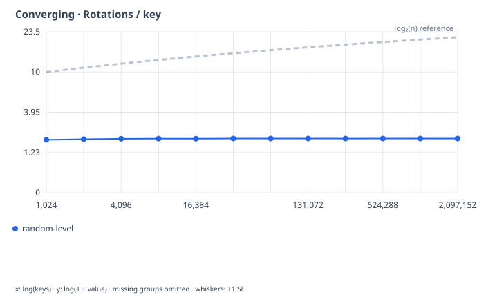
Download SVG


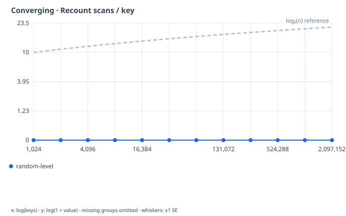
Download SVG
Measurements for converging
| Strategy | Input | Keys | Status | Trials | µs/key | Seconds | Mean depth | Depth SE | Height | Insertion depth | Rot/key | Max rot | Decisions/key | Max decisions | Bits/key | Max bits | Scans/key | Max scans |
|---|---|---|---|---|---|---|---|---|---|---|---|---|---|---|---|---|---|---|
| random-level | converging | 1.02e+03 | complete | 1/1 | 34.4 | 0.0352 | 14.1 | — | 33 | 8.88 | 1.86 | 8 | 0 | 0 | 64 | 64 | 0 | 0 |
| random-level | converging | 2.05e+03 | complete | 1/1 | 33.7 | 0.0691 | 16.5 | — | 40 | 9.81 | 1.9 | 10 | 0 | 0 | 64 | 64 | 0 | 0 |
| random-level | converging | 4.1e+03 | complete | 1/1 | 33 | 0.135 | 17.7 | — | 46 | 10.9 | 1.92 | 12 | 0 | 0 | 64 | 64 | 0 | 0 |
| random-level | converging | 8.19e+03 | complete | 1/1 | 33.7 | 0.276 | 20.6 | — | 71 | 11.9 | 1.93 | 13 | 0 | 0 | 64 | 64 | 0 | 0 |
| random-level | converging | 1.64e+04 | complete | 1/1 | 34.6 | 0.567 | 19.2 | — | 51 | 12.8 | 1.93 | 14 | 0 | 0 | 64 | 64 | 0 | 0 |
| random-level | converging | 3.28e+04 | complete | 1/1 | 34.9 | 1.14 | 23.6 | — | 64 | 13.8 | 1.94 | 16 | 0 | 0 | 64 | 64 | 0 | 0 |
| random-level | converging | 6.55e+04 | complete | 1/1 | 35.3 | 2.31 | 23.6 | — | 61 | 14.8 | 1.94 | 16 | 0 | 0 | 64 | 64 | 0 | 0 |
| random-level | converging | 1.31e+05 | complete | 1/1 | 34.4 | 4.51 | 25.7 | — | 77 | 15.8 | 1.94 | 18 | 0 | 0 | 64 | 64 | 0 | 0 |
| random-level | converging | 2.62e+05 | complete | 1/1 | 37.5 | 9.84 | 28.8 | — | 78 | 16.8 | 1.94 | 18 | 0 | 0 | 64 | 64 | 0 | 0 |
| random-level | converging | 5.24e+05 | complete | 1/1 | 37.9 | 19.8 | 35.3 | — | 126 | 17.8 | 1.94 | 18 | 0 | 0 | 64 | 64 | 0 | 0 |
| random-level | converging | 1.05e+06 | complete | 1/1 | 39.1 | 41 | 31.4 | — | 94 | 18.8 | 1.94 | 20 | 0 | 0 | 64 | 64 | 0 | 0 |
| random-level | converging | 2.1e+06 | complete | 1/1 | 40 | 83.9 | 34.9 | — | 110 | 19.8 | 1.94 | 22 | 0 | 0 | 64 | 64 | 0 | 0 |
Pairs sequences

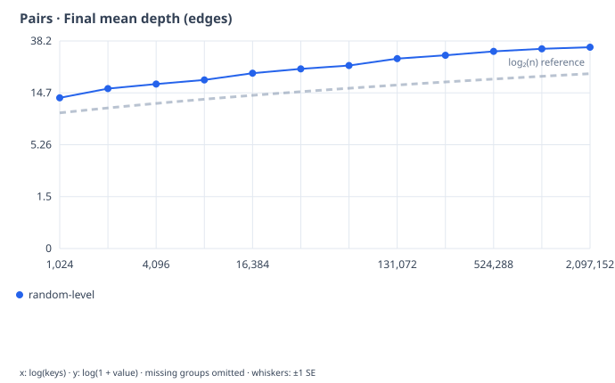
Download SVG
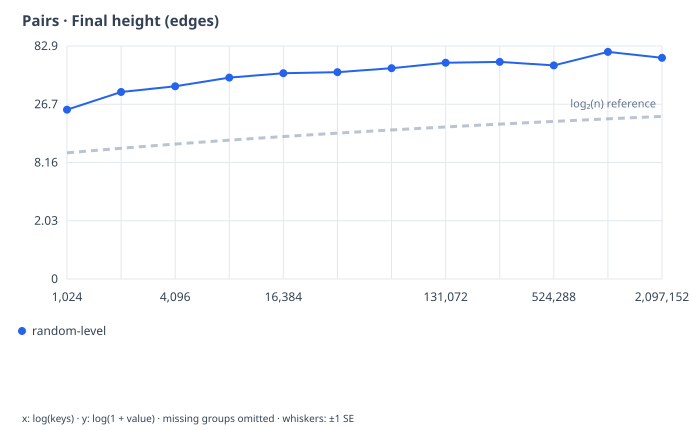
Download SVG
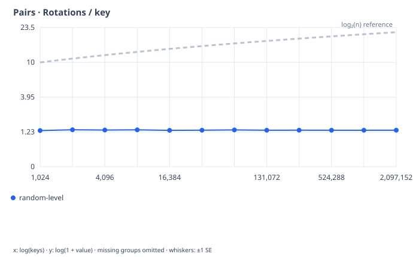
Download SVG
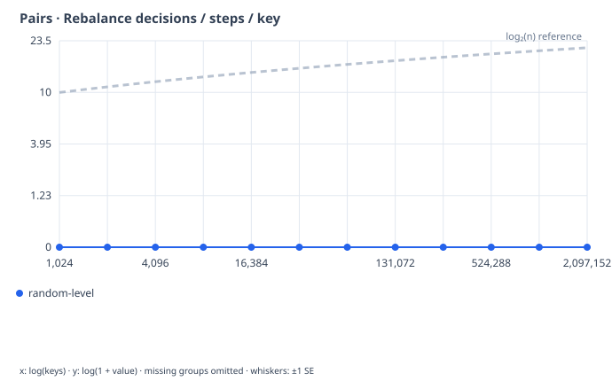
Download SVG
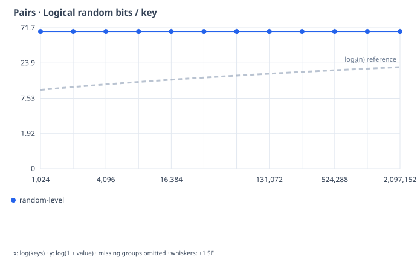
Download SVG
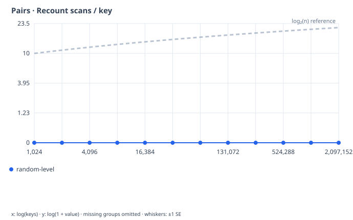
Download SVG
Measurements for pairs
| Strategy | Input | Keys | Status | Trials | µs/key | Seconds | Mean depth | Depth SE | Height | Insertion depth | Rot/key | Max rot | Decisions/key | Max decisions | Bits/key | Max bits | Scans/key | Max scans |
|---|---|---|---|---|---|---|---|---|---|---|---|---|---|---|---|---|---|---|
| random-level | pairs | 1.02e+03 | complete | 1/1 | 33 | 0.0338 | 13.4 | — | 24 | 7.8 | 1.3 | 12 | 0 | 0 | 64 | 64 | 0 | 0 |
| random-level | pairs | 2.05e+03 | complete | 1/1 | 33.1 | 0.0678 | 15.9 | — | 34 | 8.75 | 1.34 | 11 | 0 | 0 | 64 | 64 | 0 | 0 |
| random-level | pairs | 4.1e+03 | complete | 1/1 | 32.2 | 0.132 | 17.3 | — | 38 | 9.69 | 1.32 | 11 | 0 | 0 | 64 | 64 | 0 | 0 |
| random-level | pairs | 8.19e+03 | complete | 1/1 | 33.3 | 0.273 | 18.7 | — | 45 | 10.8 | 1.33 | 12 | 0 | 0 | 64 | 64 | 0 | 0 |
| random-level | pairs | 1.64e+04 | complete | 1/1 | 33.8 | 0.553 | 21.2 | — | 49 | 11.7 | 1.31 | 14 | 0 | 0 | 64 | 64 | 0 | 0 |
| random-level | pairs | 3.28e+04 | complete | 1/1 | 35 | 1.15 | 22.9 | — | 50 | 12.7 | 1.32 | 16 | 0 | 0 | 64 | 64 | 0 | 0 |
| random-level | pairs | 6.55e+04 | complete | 1/1 | 35.2 | 2.31 | 24.4 | — | 54 | 13.7 | 1.33 | 15 | 0 | 0 | 64 | 64 | 0 | 0 |
| random-level | pairs | 1.31e+05 | complete | 1/1 | 33.6 | 4.4 | 27.7 | — | 60 | 14.7 | 1.31 | 17 | 0 | 0 | 64 | 64 | 0 | 0 |
| random-level | pairs | 2.62e+05 | complete | 1/1 | 35.7 | 9.36 | 29.5 | — | 61 | 15.7 | 1.32 | 18 | 0 | 0 | 64 | 64 | 0 | 0 |
| random-level | pairs | 5.24e+05 | complete | 1/1 | 36.8 | 19.3 | 31.6 | — | 57 | 16.7 | 1.31 | 20 | 0 | 0 | 64 | 64 | 0 | 0 |
| random-level | pairs | 1.05e+06 | complete | 1/1 | 38.1 | 40 | 33.1 | — | 74 | 17.7 | 1.31 | 18 | 0 | 0 | 64 | 64 | 0 | 0 |
| random-level | pairs | 2.1e+06 | complete | 1/1 | 39.4 | 82.5 | 34.1 | — | 66 | 18.7 | 1.32 | 21 | 0 | 0 | 64 | 64 | 0 | 0 |
Bitonic sequences
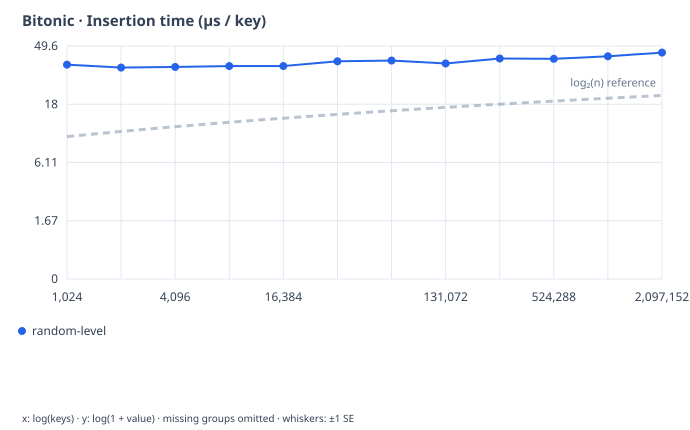
Download SVG
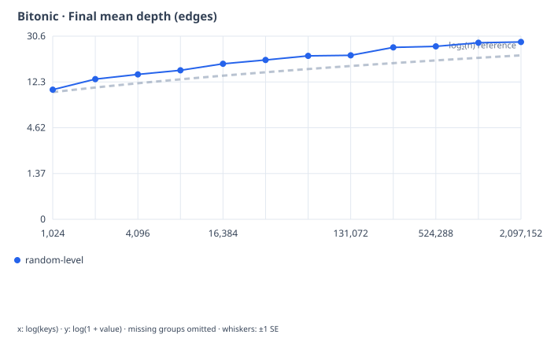
Download SVG
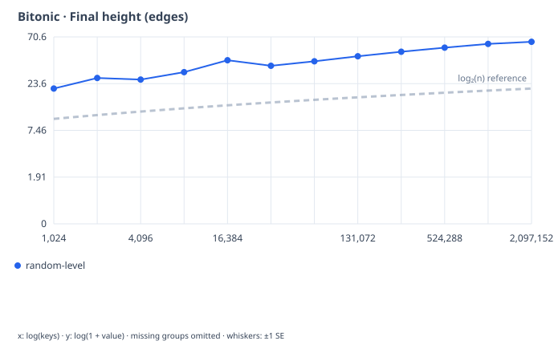
Download SVG
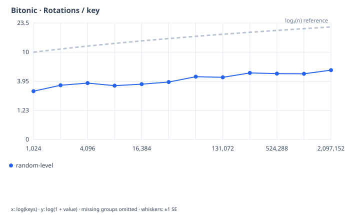
Download SVG
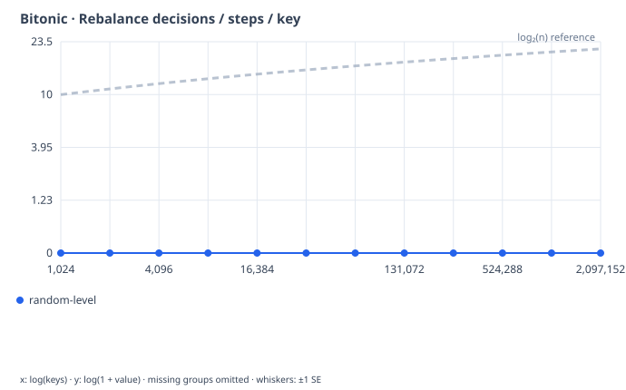
Download SVG
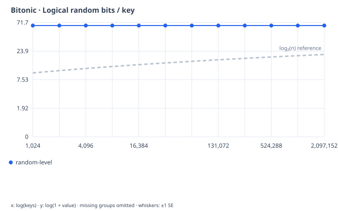
Download SVG
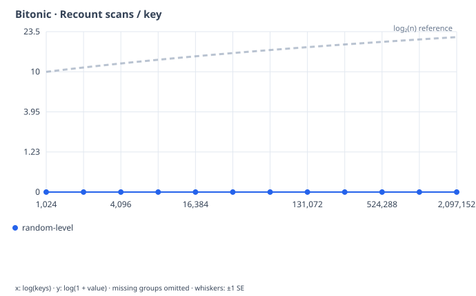
Download SVG
Measurements for bitonic
| Strategy | Input | Keys | Status | Trials | µs/key | Seconds | Mean depth | Depth SE | Height | Insertion depth | Rot/key | Max rot | Decisions/key | Max decisions | Bits/key | Max bits | Scans/key | Max scans |
|---|---|---|---|---|---|---|---|---|---|---|---|---|---|---|---|---|---|---|
| random-level | bitonic | 1.02e+03 | complete | 1/1 | 35.9 | 0.0368 | 10.5 | — | 21 | 9.48 | 2.77 | 16 | 0 | 0 | 64 | 64 | 0 | 0 |
| random-level | bitonic | 2.05e+03 | complete | 1/1 | 34.2 | 0.07 | 13.1 | — | 27 | 11.1 | 3.44 | 19 | 0 | 0 | 64 | 64 | 0 | 0 |
| random-level | bitonic | 4.1e+03 | complete | 1/1 | 34.6 | 0.142 | 14.4 | — | 26 | 12.4 | 3.71 | 17 | 0 | 0 | 64 | 64 | 0 | 0 |
| random-level | bitonic | 8.19e+03 | complete | 1/1 | 35.1 | 0.287 | 15.6 | — | 31 | 13 | 3.38 | 21 | 0 | 0 | 64 | 64 | 0 | 0 |
| random-level | bitonic | 1.64e+04 | complete | 1/1 | 35.1 | 0.575 | 17.8 | — | 41 | 14.2 | 3.57 | 18 | 0 | 0 | 64 | 64 | 0 | 0 |
| random-level | bitonic | 3.28e+04 | complete | 1/1 | 38.1 | 1.25 | 19.2 | — | 36 | 15.5 | 3.84 | 23 | 0 | 0 | 64 | 64 | 0 | 0 |
| random-level | bitonic | 6.55e+04 | complete | 1/1 | 38.6 | 2.53 | 20.8 | — | 40 | 17.3 | 4.61 | 24 | 0 | 0 | 64 | 64 | 0 | 0 |
| random-level | bitonic | 1.31e+05 | complete | 1/1 | 36.7 | 4.81 | 21 | — | 45 | 18.2 | 4.52 | 27 | 0 | 0 | 64 | 64 | 0 | 0 |
| random-level | bitonic | 2.62e+05 | complete | 1/1 | 40 | 10.5 | 24.6 | — | 50 | 19.9 | 5.22 | 27 | 0 | 0 | 64 | 64 | 0 | 0 |
| random-level | bitonic | 5.24e+05 | complete | 1/1 | 39.8 | 20.9 | 25.1 | — | 55 | 20.8 | 5.1 | 28 | 0 | 0 | 64 | 64 | 0 | 0 |
| random-level | bitonic | 1.05e+06 | complete | 1/1 | 41.6 | 43.6 | 26.9 | — | 60 | 21.8 | 5.08 | 32 | 0 | 0 | 64 | 64 | 0 | 0 |
| random-level | bitonic | 2.1e+06 | complete | 1/1 | 44.3 | 92.9 | 27.3 | — | 63 | 23.4 | 5.71 | 31 | 0 | 0 | 64 | 64 | 0 | 0 |
Runs sequences
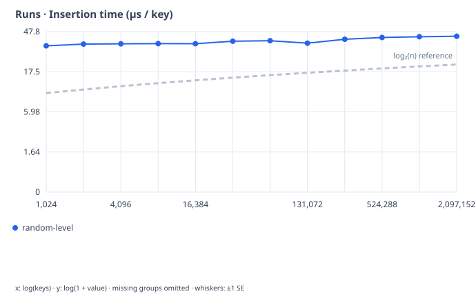
Download SVG
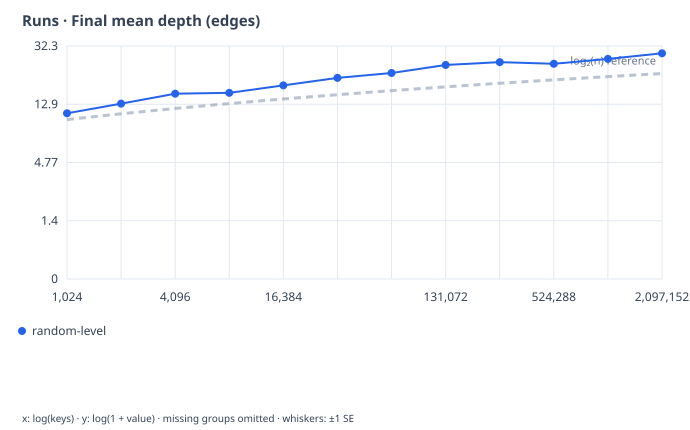
Download SVG
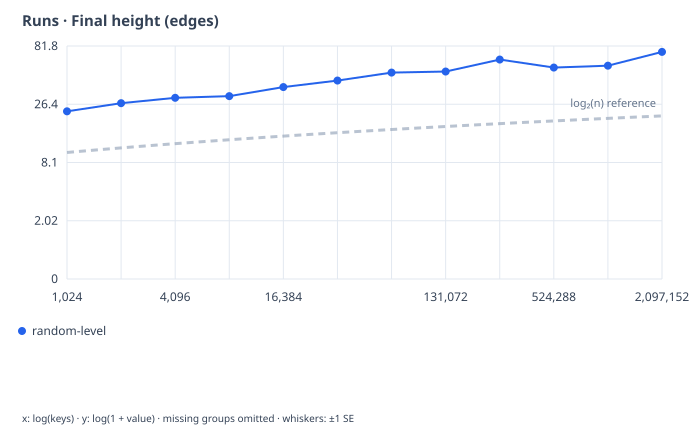
Download SVG
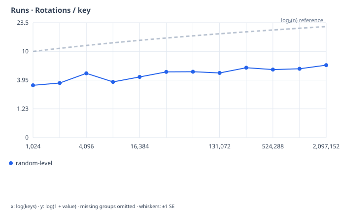
Download SVG

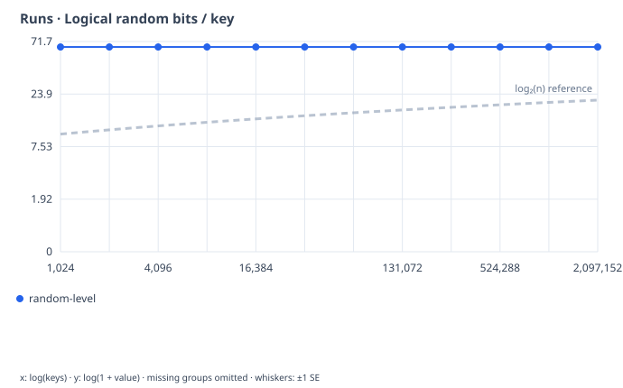
Download SVG

Measurements for runs
| Strategy | Input | Keys | Status | Trials | µs/key | Seconds | Mean depth | Depth SE | Height | Insertion depth | Rot/key | Max rot | Decisions/key | Max decisions | Bits/key | Max bits | Scans/key | Max scans |
|---|---|---|---|---|---|---|---|---|---|---|---|---|---|---|---|---|---|---|
| random-level | runs | 1.02e+03 | complete | 1/1 | 33.6 | 0.0344 | 11.1 | — | 23 | 9.98 | 3.29 | 19 | 0 | 0 | 64 | 64 | 0 | 0 |
| random-level | runs | 2.05e+03 | complete | 1/1 | 35.1 | 0.0719 | 13 | — | 27 | 11.2 | 3.57 | 21 | 0 | 0 | 64 | 64 | 0 | 0 |
| random-level | runs | 4.1e+03 | complete | 1/1 | 35.3 | 0.145 | 15.2 | — | 30 | 13.6 | 4.98 | 29 | 0 | 0 | 64 | 64 | 0 | 0 |
| random-level | runs | 8.19e+03 | complete | 1/1 | 35.5 | 0.291 | 15.5 | — | 31 | 13.3 | 3.71 | 23 | 0 | 0 | 64 | 64 | 0 | 0 |
| random-level | runs | 1.64e+04 | complete | 1/1 | 35.4 | 0.581 | 17.4 | — | 37 | 15.1 | 4.41 | 26 | 0 | 0 | 64 | 64 | 0 | 0 |
| random-level | runs | 3.28e+04 | complete | 1/1 | 37.7 | 1.24 | 19.6 | — | 42 | 16.9 | 5.23 | 29 | 0 | 0 | 64 | 64 | 0 | 0 |
| random-level | runs | 6.55e+04 | complete | 1/1 | 38.1 | 2.5 | 21.2 | — | 49 | 17.9 | 5.26 | 33 | 0 | 0 | 64 | 64 | 0 | 0 |
| random-level | runs | 1.31e+05 | complete | 1/1 | 35.9 | 4.71 | 24 | — | 50 | 18.7 | 5.05 | 34 | 0 | 0 | 64 | 64 | 0 | 0 |
| random-level | runs | 2.62e+05 | complete | 1/1 | 39.6 | 10.4 | 25.1 | — | 63 | 20.7 | 5.99 | 41 | 0 | 0 | 64 | 64 | 0 | 0 |
| random-level | runs | 5.24e+05 | complete | 1/1 | 41.4 | 21.7 | 24.5 | — | 54 | 21.3 | 5.64 | 46 | 0 | 0 | 64 | 64 | 0 | 0 |
| random-level | runs | 1.05e+06 | complete | 1/1 | 42.1 | 44.2 | 26.4 | — | 56 | 22.5 | 5.79 | 44 | 0 | 0 | 64 | 64 | 0 | 0 |
| random-level | runs | 2.1e+06 | complete | 1/1 | 42.7 | 89.4 | 28.8 | — | 73 | 24.2 | 6.51 | 50 | 0 | 0 | 64 | 64 | 0 | 0 |
Every result, ready to inspect
How to read these results
- perf_counter around the instrumented insertion loop, including cost counters; excludes input generation, warmup, process startup, final invariant validation and rendering.
- End-to-end deadline per subprocess, including warmup and validation. A timeout is censored, not a runtime or a completed tree. Remaining trials in that group are not run.
- One fixed permutation per size shared across strategies/trials; paired rotation seeds derived with SHA-256. SE is across trial seeds, conditional on that input.
- Sequential isolated subprocesses on this computer; no parallel timed trials.
- Python instrumentation timings, not bare algorithm timings. No general complexity or balance guarantee follows from these finite samples. No timing comparison is made against the optimized browser preview.
- Each group requests 1 trials. Deadline: 360 seconds per process. Root depth is zero; height counts edges. All completed trees pass ordering, parent-link, cycle and key-set checks.
- Charts include fully completed groups only, with ±1 standard error where available. Timeout groups can have partial trial metrics in the full table and downloads. Missing data is never plotted as zero.